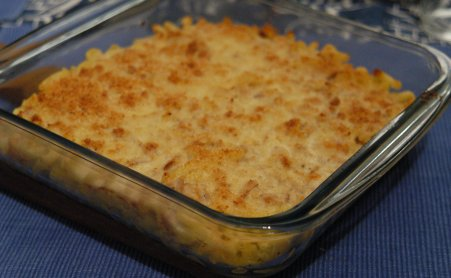

| Zutaten für 4 Personen: | |
| 500 g | Hörnli |
| 2 | Büchsen Thon |
| 3 dl | Rahm |
| 1 | Ei |
| 100 g | Parmesan |
| 1 El | Maizena |
| 1,5 dl | Weisswein |
| Salz | |
| Pfeffer | |
Die Hörnli in Salzwasser kochen.
Den Thon zerzupfen, in den Rahm geben, den Rahm erhitzen und würzen.
Den Backofen auf 220°C vorheizen
Im Wein wird das Maizena aufgelöst und in die Rahm-Thon-Sauce gerührt.
Die Gratinform bebuttern.
Sauce noch einmal kurz aufkochen, vom Herd nehmen und das Ei dazu rühren.
Die Hörnli in eine feuerfeste Form geben und die Sauce darüber giessen. Mit Parmesan überstreuen und kurz (20 Minuten, 220°C) gratinieren.
Von RE getestet vor 14.5.95. Schmeckt ganz gut. Die 500 g Hörnli sind deutlich zu viel. Auszuprobieren:
Für 1 Person: 100g Hörnli, 1 Büchse Thon, 1.5 dl Rahm, 1 Ei, 50g Parmesan, 1/2 El Maizena, 1 dl Weisswein, Salz, Pfeffer.
Für 4 Personen: 300g Hörnli, 2 Büchsen Thon, 3dl Rahm, 1 Ei, 100g Parmesan, 1 El Maizena, 1.5dl Weisswein, Salz, Pfeffer.
Am 13.12.2004 gekocht. Für 4 Personen 250g Hörnli, 2 Büchsen Thon.
@LINKBACK_TAG@ @WAKELOCK@